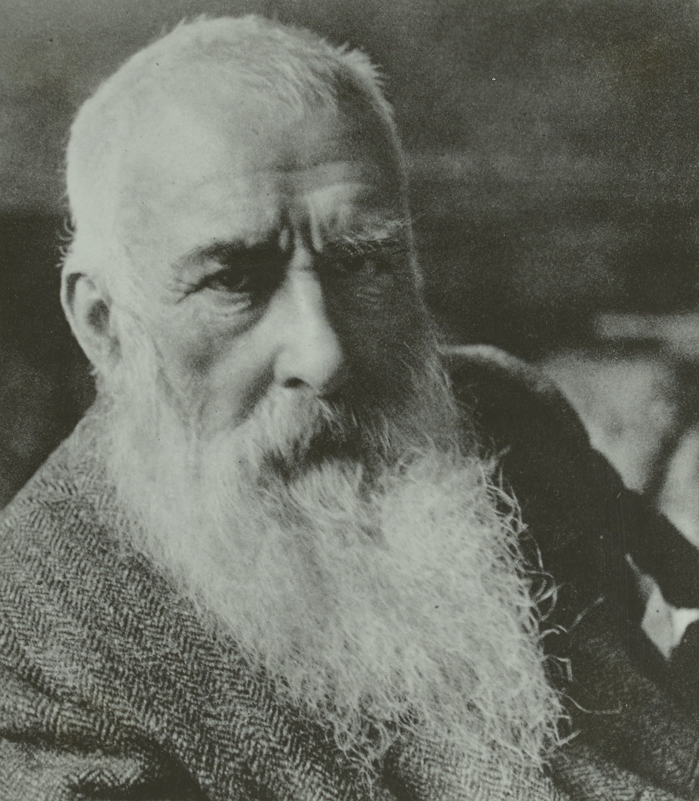
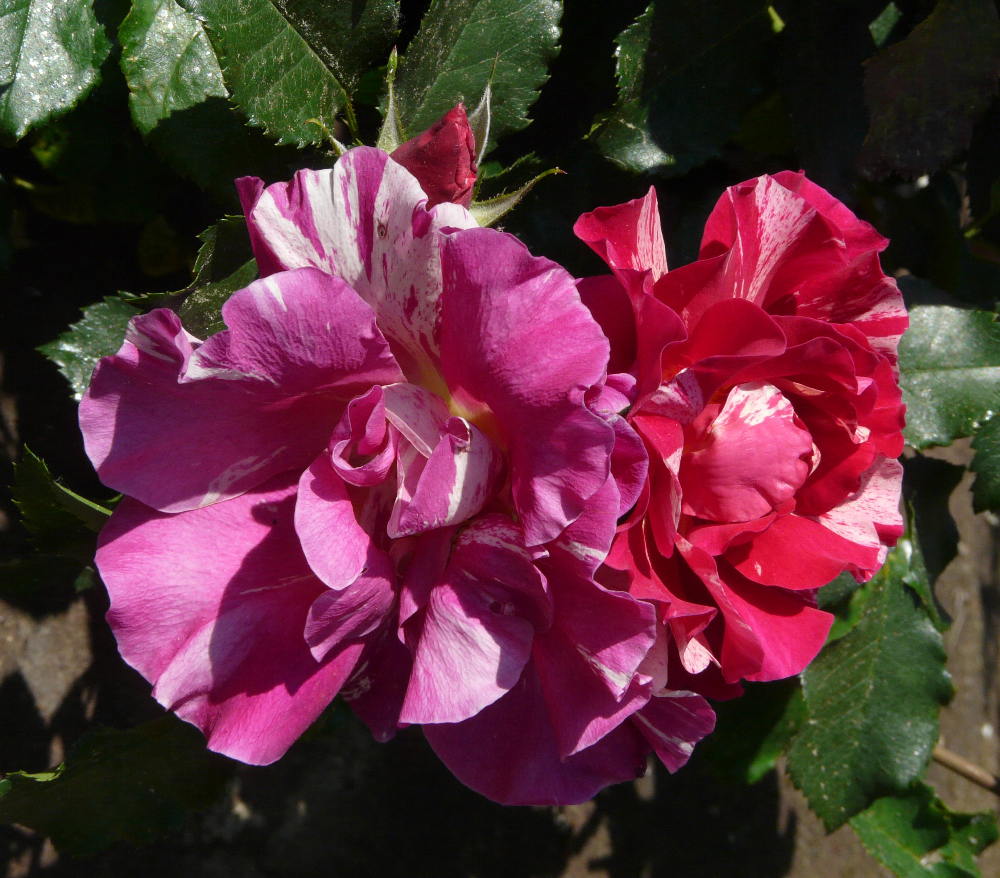
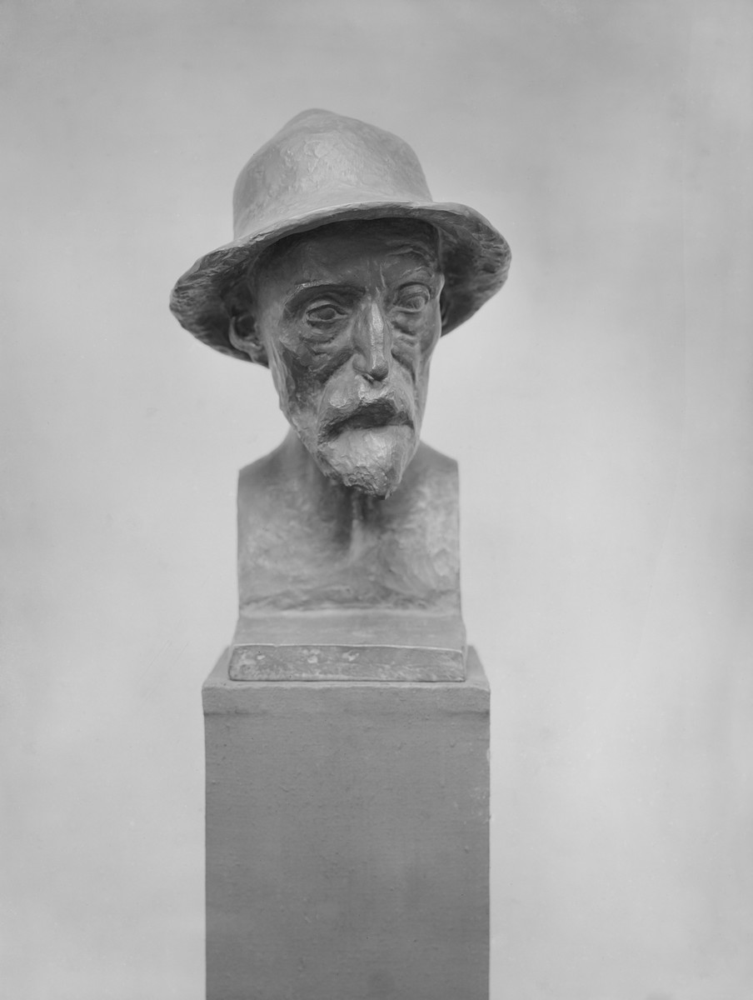

<!DOCTYPE html>
<link rel="stylesheet" type="text/css" href="test.css">
<section class="intro">
    <div class="container">
        <header>
            
            <span>
                <a class="headerlink">concept</a>
                <a class="headerlink">the steps</a>
                <a class="headerlink">the XML file</a>
                <a class="headerlink">python RDF converter</a>
            </span>
        </header>
    </div>
  </section>

  <section>
    <span>
      </span>
  </section>

  <section class="timeline">
    <ul>
      <li>
        <div>
            <a><time>step 1</time> The items</a>
        </div>
      </li>
      <li>
        <div>
            <a><time>step 2</time> The E/R model</a>
        </div>
      </li>
      <li>
        <div>
            <a href="meta.html"><time>step 3</time> Metadata analysis</a>
        </div>
      </li>
      <li>
        <div>
            <a><time>step 4</time> Expanding the theoretical model</a>
        
        </div>
      </li>
      <li>
        <div>
            <a><time>step 5</time> The formal model</a>
        </div>
      </li>
      <li>
        <div>
            <a><time>step 6</time> The final RDF graph</a>
        </div>
      </li>

Rosa 'Edgar Degas ®' - Università degli studi di Trieste, Italy - CC BY-SA.
https://www.europeana.eu/item/11628/_FOTO_AM_UNITS_ITALY_88561
689689
6bdf23
d936e1
Ignore it this is just work in progress!!